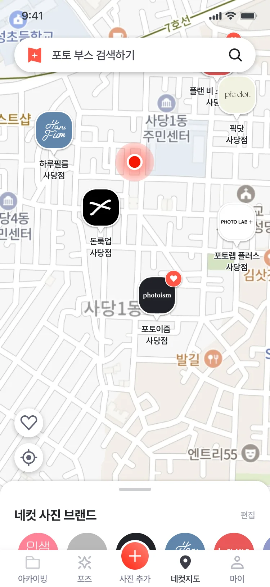
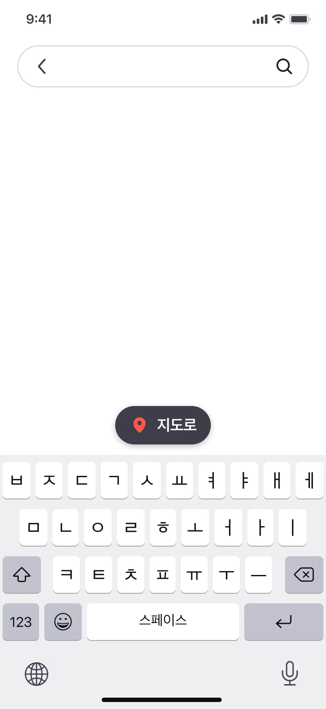
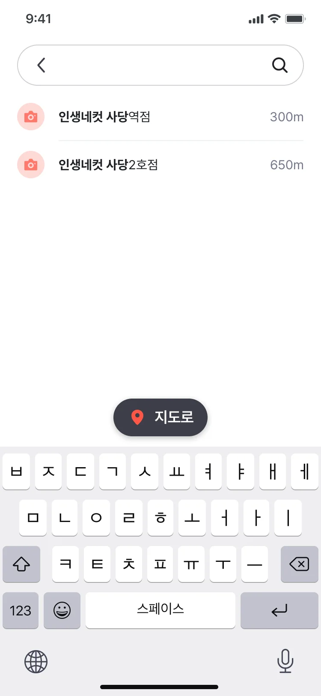
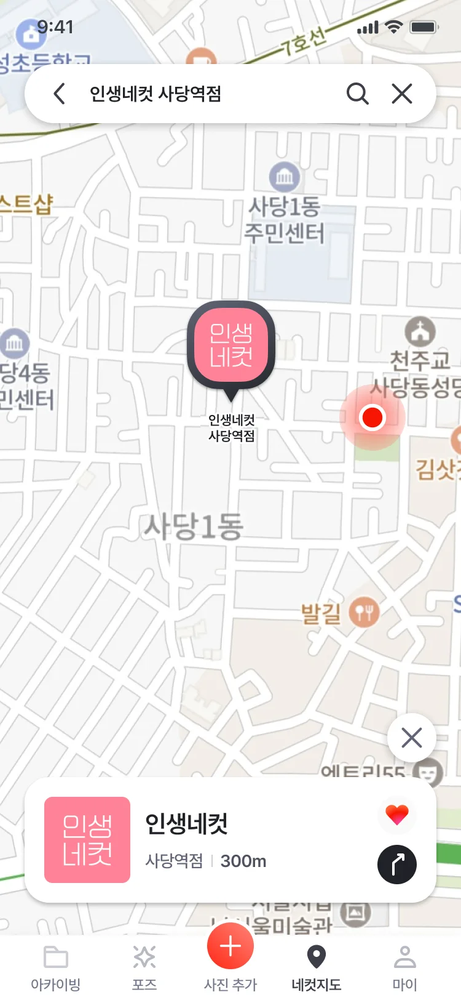
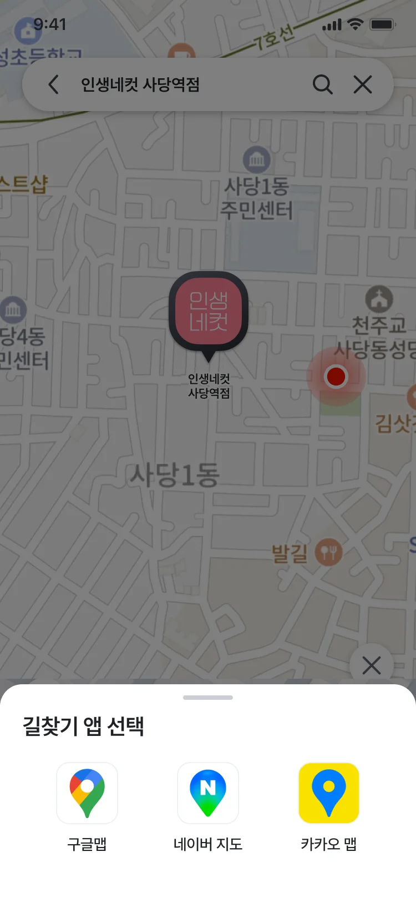
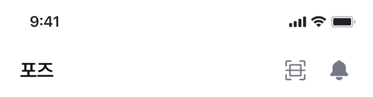
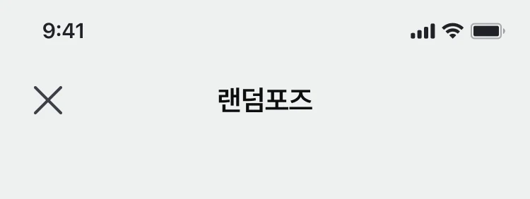
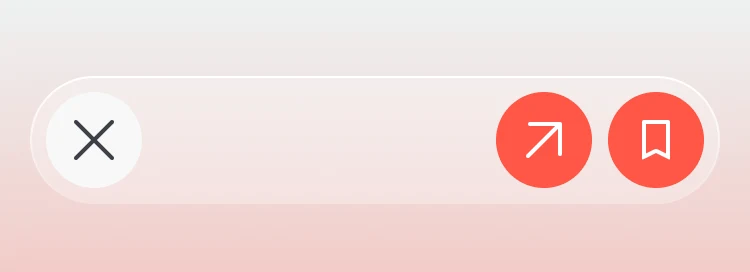
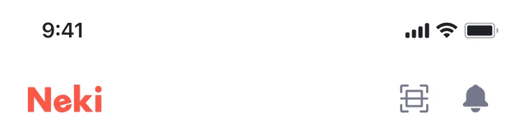

포토부스 찾기부터 네컷 보관까지
네컷의 순간이
이어지는 곳
가까운 포토부스를 찾고, 함께 찍는 사람에 맞는 포즈를 고르고, 찍은 네컷은 네키에 모아두세요.
네컷 찍는 날,
이런 대화 해봤죠?
토요일 네컷3
이번 주 토요일 네컷 찍을 사람!!
나나 나 갈래
콜. 근데 강남 쪽 부스 어디 있어? 저번에 간 데 없어졌던데
이번엔 포즈 미리 정해 가자 ㅋㅋ 셋이 맨날 브이만 함
ㅇㅈ 저번에 찍은 거 보고 정하자… 근데 그거 어디 있지? 갤러리에 안 보여
그래서, 네키를 만들었어요.
네컷지도
흩어진 포토부스,
네키로 쉽게 찾아요
인생네컷, 포토이즘, 포토그레이, 하루필름까지 브랜드가 달라도 한 지도에서 봐요.
검색해요
강남, 홍대입구역, 인생네컷처럼 지역·역·브랜드 무엇이든 검색해요.
골라요
찾은 부스가 같은 지도 위에 바로 떠요. 핀을 누르면 거리와 정보가 보여요.
찾아가요
길찾기를 누르고 구글맵·네이버 지도·카카오맵 중 쓰는 앱을 고르면 끝이에요.





포즈 추천
찍을 곳을 찾았다면,
이제 우리 무슨 포즈 하지?
둘이 함께 찍을 네컷, 포즈도 미리 골라요.
친구, 썸, 커플. 우리 사이에 맞게 추천해 드릴게요.
몇 명이서 찍어요?
폰 안의 포즈를 눌러 직접 골라보세요



아카이빙
갤러리 속 네컷,
이제 한 곳에 모아요
갤러리 어딘가에 흩어져 있던 우리의 네컷

앨범전체 앨범
최근 사진모든 사진
자주 묻는 질문
궁금한 점, 먼저 답해둘게요
A.네. 네키는 무료로 받아서 쓸 수 있어요.
A.네. App Store와 Google Play에서 모두 받을 수 있어요.
A.인생네컷, 포토이즘, 포토그레이, 하루필름, 플랜비 스튜디오 등 여러 브랜드의 매장을 한 지도에서 찾을 수 있어요. 지역, 지하철역, 브랜드 이름으로 검색하면 주변 매장이 바로 보여요.
A.네. 갤러리에서 사진을 고른 뒤 공유 버튼으로 네키를 선택하면 바로 저장돼요. 저장한 네컷은 앨범별로 정리하고 메모도 남길 수 있어요.
A.함께 찍는 인원(1~4명)을 고르면 네 컷이 이어지는 포즈 세트를 추천해요. 두 명이면 친구, 썸, 커플 중에서 관계를 골라 더 잘 맞는 포즈를 볼 수 있어요. 랜덤 포즈로 새로운 조합을 바로 받아볼 수도 있어요.
A.네. 여러 장을 선택해서 다른 앨범으로 옮기거나, 복제하거나, 한 번에 삭제할 수 있어요.
앱 다운로드
찍는 순간부터
간직하는 순간까지
네컷의 모든 순간을 네키 하나로.
휴대폰 카메라로 찍어보세요아이폰은 App Store, 안드로이드는 Google Play로 바로 연결돼요.
오늘의 네컷도 여기에